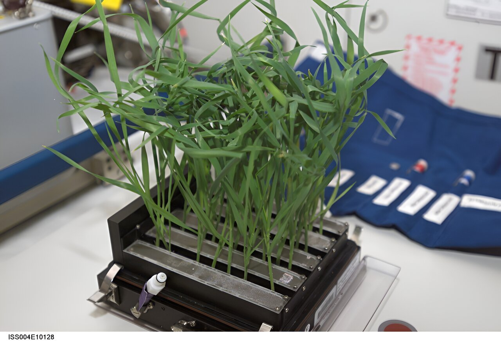
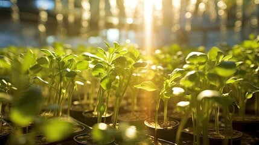

Space - Grown Plant
In microgravity, plants experience a fundamentally altered growth environment. Without a strong gravity vector, roots lose consistent orientation cues, often growing in random directions, while stems and leaves may not align as predictably toward light. Water and nutrient distribution becomes irregular, requiring engineered systems such as hydroponics, capillary-based delivery, and controlled LED lighting. Studies aboard the ISS with Veggie and the Advanced Plant Habitat (APH) reveal changes in gene expression, cell wall structure, and hormone signaling, affecting growth rate, leaf morphology, and flowering time. Some plants exhibit stress responses linked to altered fluid transport and reduced mechanical load. Despite these challenges, experiments have demonstrated successful cultivation of lettuce, mustard greens, zinnias, and wheat in orbit, providing critical insight into sustaining crews on long-duration missions. Space-grown plants not only produce food but also contribute to oxygen regeneration, CO₂ absorption, and psychological support for astronauts, underscoring their role in closed-loop life support systems for lunar and Martian habitats.
NASA Resources

Earth - Grown Plant
On Earth, plant growth is strongly directed by gravity, light, water, and nutrient availability. Roots grow downward through positive gravitropism, stems orient upward through negative gravitropism and phototropism, and leaves position themselves to maximize photosynthesis. Flowering, seed set, and germination follow predictable developmental timelines, providing stable baselines for comparison.
Soil and substrate systems ensure reliable nutrient delivery, pH buffering, and microbial interactions that support plant health. Water transport is governed by gravity, capillarity, and transpiration, while light cycles (natural or controlled) regulate developmental programs.
In space research, Earth-grown “control plants” are essential for comparison with microgravity experiments. NASA maintains parallel ground controls in facilities like Veggie and the Advanced Plant Habitat (APH), enabling analysis of growth rate, morphology, gene expression, and nutritional content against Earth standards.
NASA Resources